Hexadecimal
Colors 
Image 
ASCII American Standard Code for Information Interchange (1967)
 printable
printable complete
completeCode Pages
 IBM PC cp437
IBM PC cp437 Icelandic cp861, Denmark/Norway cp865, Greek cp737 Windows-1252
Icelandic cp861, Denmark/Norway cp865, Greek cp737 Windows-1252 Central European cp852, KOI8-R
Central European cp852, KOI8-R EBCDIC: Extended Binary Coded Decimal Interchange Code (1964)
EBCDIC: Extended Binary Coded Decimal Interchange Code (1964)
 APL: A Programming Language - EBCDIC CodePage 293 (1966)
APL: A Programming Language - EBCDIC CodePage 293 (1966)
 PETSCII - PET Standard Code of Information Interchange / CBM ASCII (1977-)
PETSCII - PET Standard Code of Information Interchange / CBM ASCII (1977-)
Containers:
 ELF - Executable and linkable format
ELF - Executable and linkable format Com (Dos [transient] commands)
Com (Dos [transient] commands)
Exe - MZ executable [DOS] (1981-)

 EXE (PE Dos Stub)
EXE (PE Dos Stub) Pif - Program information File (Windows 1-, 1985-)
Pif - Program information File (Windows 1-, 1985-)
 NE - New Executable (Windows 1-2000, 1985-2000)
NE - New Executable (Windows 1-2000, 1985-2000)
 LE - Linear Executable (DOS, 1992)
LE - Linear Executable (DOS, 1992)
 PE - Portable executable (Windows NT 3.1-, 1993-)
PE - Portable executable (Windows NT 3.1-, 1993-)
 Rsrc - Resource fork (Mac System 1-, 1984)
Rsrc - Resource fork (Mac System 1-, 1984)
 Pef - Preferred Executable Format (Mac System 7-9 , 1991-1999)
Pef - Preferred Executable Format (Mac System 7-9 , 1991-1999)
Macho - Mach Object (NeXTSTEP, MacOS, iOS)
 (Little 32b)
(Little 32b) (Little 64b)
(Little 64b) (Big 32b PowerPC)
(Big 32b PowerPC) (Big 64b PowerPC)
(Big 64b PowerPC) Fat/Universal Mach-o
Fat/Universal Mach-o
 Class - Java / JVM (1994)
Class - Java / JVM (1994)
 DEX - Dalvik Executable [Android] (2008?)
DEX - Dalvik Executable [Android] (2008?)
 PYC - Compiled python (1998-)
PYC - Compiled python (1998-)
 Swf - ShockWave Flash / Small web file (1995?)
Swf - ShockWave Flash / Small web file (1995?)
Dol - Nintendo Dolphin (Gamecube, Wii, 2001-2017)
 executable
executable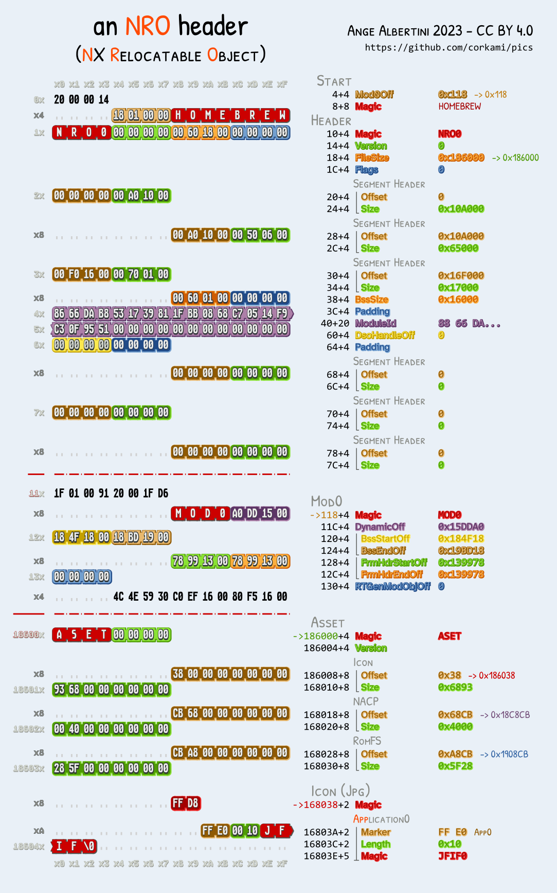NRO - NX (Nintendo Switch) Relocatable Object
 OFF - OS/360 Object File format [EBCDIC] (1966?)
OFF - OS/360 Object File format [EBCDIC] (1966?)
 Tos - GEMDOS Program format [Atari ST] (1985)
Tos - GEMDOS Program format [Atari ST] (1985)
 Hunk - Amiga Hunk [Commodore AmigaOS] (1985)
Hunk - Amiga Hunk [Commodore AmigaOS] (1985)
 TE - Terse Executable [UEFI] (2017?)
TE - Terse Executable [UEFI] (2017?)
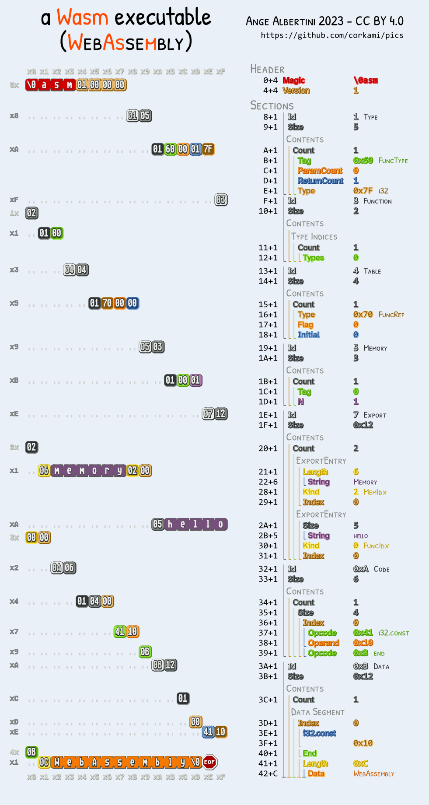Wasm - WebAssembly (2017)
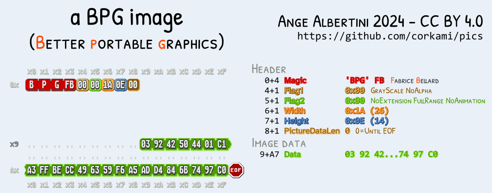Bpg - Better/Bellard Portable Graphics (2014)
 Png - Portable Network graphics (1996)
Png - Portable Network graphics (1996)
 Jpeg (JFIF) - Joint Photographic Experts Group - File Interchange Format (1992)
Jpeg (JFIF) - Joint Photographic Experts Group - File Interchange Format (1992)
 Dicom - Digital Imaging and Communications in Medicine (1985)
Dicom - Digital Imaging and Communications in Medicine (1985)
 Psd - PhotoShop Document (1990)
Psd - PhotoShop Document (1990)
 Xbm - X BitMap (X11 1989)
Xbm - X BitMap (X11 1989)
Netpbm (1988)
 Pgm - Portable Graymap
Pgm - Portable Graymap Ppm - Portable Pixmap
Ppm - Portable Pixmap [I]Lbm - Interleaved Bitmap [IFF] (1985)
[I]Lbm - Interleaved Bitmap [IFF] (1985)
BMP - Bitmap [Windows 2 (1987)]
 v1
v1 v3 (1991)
v3 (1991) v5 (1998)
v5 (1998)Gif - Graphics Interchange Format (1987)
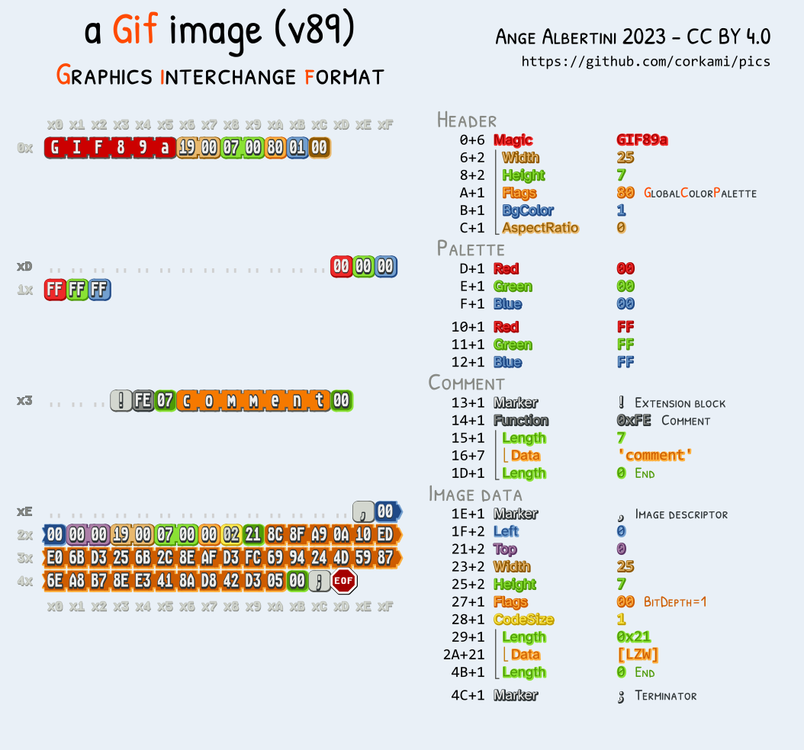v89, with a comment
TIFF - Tag Image File Format (1986)
 little endian
little endian big endian
big endianPCX - Zsoft Picture exchange [DOS] (1982)
 16 colors
16 colors 256 colors
256 colors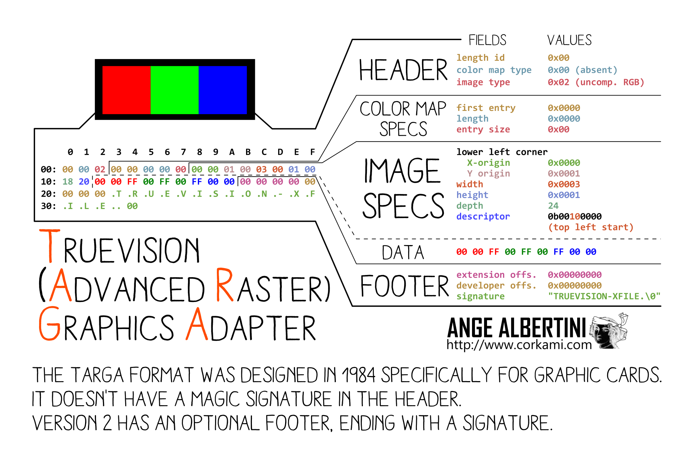TGA/TARGA - TrueVision [Advanced Raster] Graphics Adapter (1984)
ICO - Windows icon (1985)
 w/ BMP (1995?)
w/ BMP (1995?) w/ PNG (2006)
w/ PNG (2006) Pif - Portable Image Format (2022)
Pif - Portable Image Format (2022)
 Qoi - Quite Ok Image (2021)
Qoi - Quite Ok Image (2021)
 1ba - 1-bit animation (2023)
1ba - 1-bit animation (2023)
 Mp4 [ISOBMFF] (2001)
Mp4 [ISOBMFF] (2001)
 Mkv - Matroska video [EBML] (2002)
Mkv - Matroska video [EBML] (2002)
Y4M - Yuv4mpeg (2001)
 (mono)
(mono) (yuv)
(yuv) Gzip - GNU zip (1992)
Gzip - GNU zip (1992)
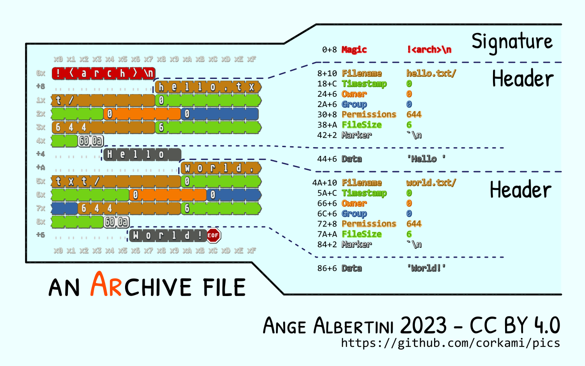Ar - Archive (1971)
 Tar - Tape archive (1979)
Tar - Tape archive (1979)
Copy [files] In & out [of archives] (1977)
 binary
binary ASCII
ASCII Zip - PkZip (1989)
Zip - PkZip (1989)
Lzma - Lempel-Ziv-Markov chain algorithm (1998)

 with End of Stream marker
with End of Stream marker 7zip (1999)
7zip (1999)
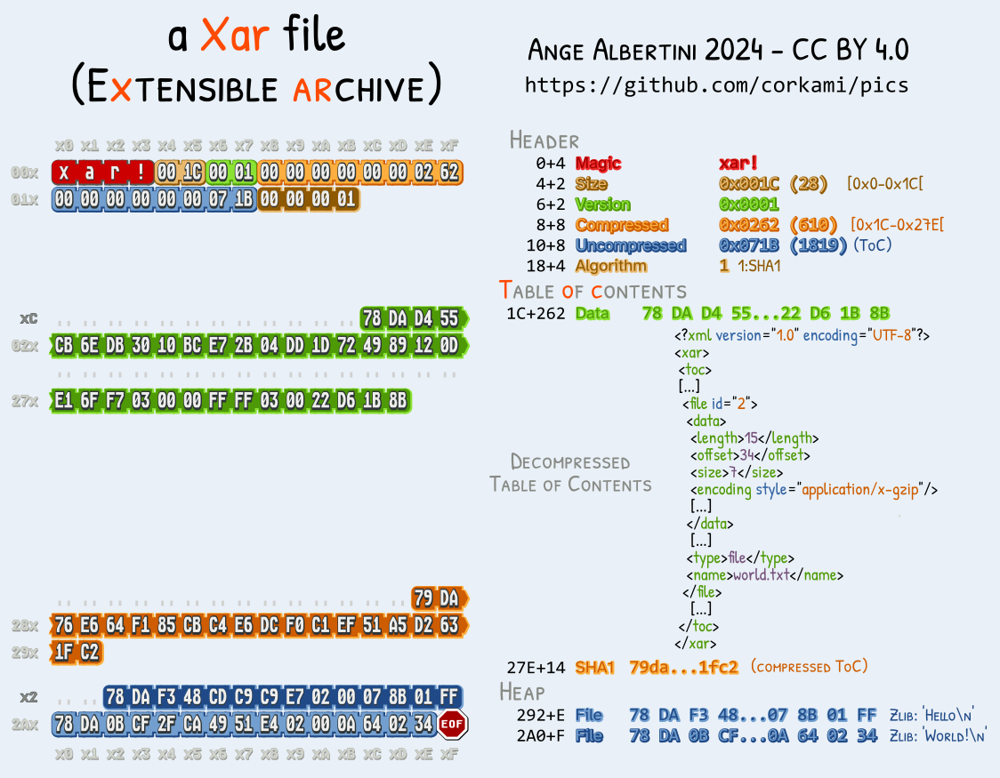Xar (2007)
 Xz (2009)
Xz (2009)
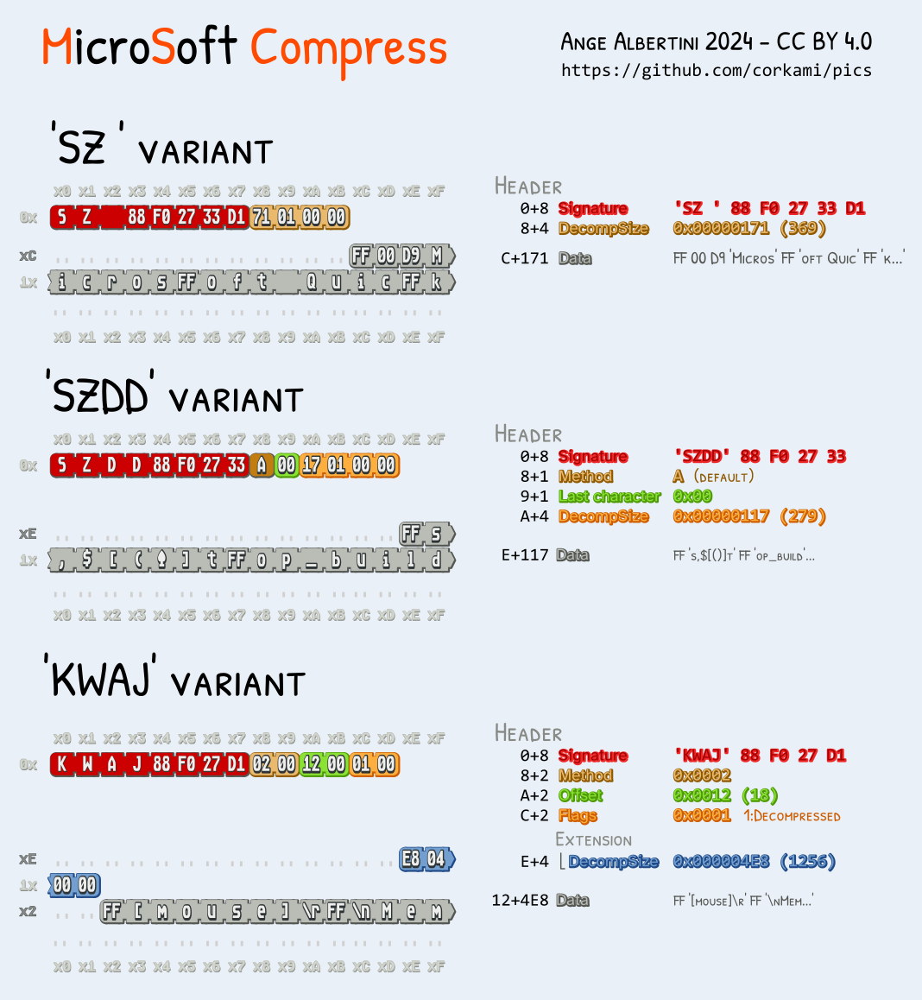Microsoft Compress (1990)
 Cab - Microsoft Cabinet File (Mscf) (1995?)
Cab - Microsoft Cabinet File (Mscf) (1995?)
 Rpm - Redhat/RPM Package Manager (1997)
Rpm - Redhat/RPM Package Manager (1997)
Rar - Roschal Archive (1993)
 v1.4
v1.4 v4 (1996)
v4 (1996) v5 (2013)
v5 (2013) Arj - Archived by Robert Jung (1991?)
Arj - Archived by Robert Jung (1991?)
 bz2 - Bzip2 (1996)
bz2 - Bzip2 (1996)
Wad - Where's all the data? (1993)
 (structure)
(structure)
 (in Doom)
(in Doom)
Zstd - Zstandard (2015)

 w/ Skippable frame
w/ Skippable frame LZ4 (2011)
LZ4 (2011)
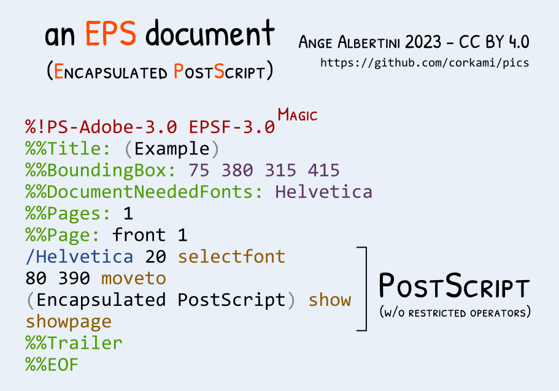Eps - Encapsulated PostScript (1987)
 Pdf - Portable document format (1992)
Pdf - Portable document format (1992)
 RTF - Rich text format (1987)
RTF - Rich text format (1987)
Microsoft Office
 Msi - Microsoft Installer [CFB]
Msi - Microsoft Installer [CFB] Docm - WordML/WordProcessingML (Microsoft Office XML format) - XML (2002)
Docm - WordML/WordProcessingML (Microsoft Office XML format) - XML (2002) ActiveMime - MSO XML Bindata
ActiveMime - MSO XML Bindata Docx - Doc XML (Office Open XML) - ZIP+XMLs (2006)
Docx - Doc XML (Office Open XML) - ZIP+XMLs (2006)Multiplan - Excel:
 Sylk - Symbolic link - Multiplan 1 (1984-), Excel 1 (1986-)
Sylk - Symbolic link - Multiplan 1 (1984-), Excel 1 (1986-)
Biff - Binary Interchange File Format
 v2: v2, 1989 (raw)
v2: v2, 1989 (raw) v8: 97-2003, 1998-2004 [CFB]
v8: 97-2003, 1998-2004 [CFB]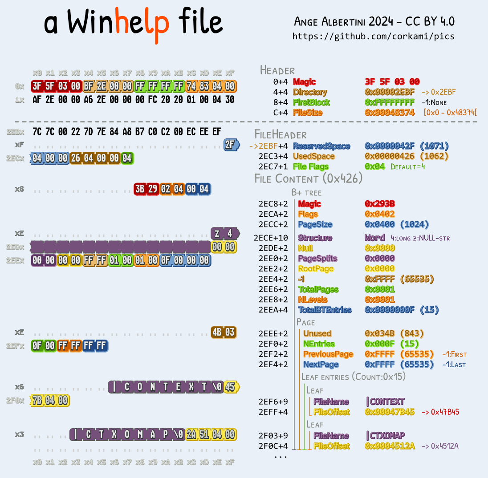Hlp - WinHelp (1990)
 Chm - Compiled HTML help - Info-Tech Storage Format (1997)
Chm - Compiled HTML help - Info-Tech Storage Format (1997)
 One - One Note (2014-)
One - One Note (2014-)
Wmf - Windows Metafile Format (1992)

 with Placeable header
with Placeable header Emf - Enhanced Metafile Format (1993)
Emf - Enhanced Metafile Format (1993)
 8svx - 8-bit sample voice [Amiga][Iff] (1985)
8svx - 8-bit sample voice [Amiga][Iff] (1985)
AIFF - Audio interchange file format [Apple][Iff] (1988)

 AIFC / AIFF-C - Compressed (1991)
AIFC / AIFF-C - Compressed (1991) Wav - Waveform [Riff] (1991)
Wav - Waveform [Riff] (1991)
 Rmi - Riff Midi [Riff]
Rmi - Riff Midi [Riff]
 Midi - Musical Instrument Digital Interface
Midi - Musical Instrument Digital Interface
 XMP - Extensible Metadata Platform (2001)
XMP - Extensible Metadata Platform (2001)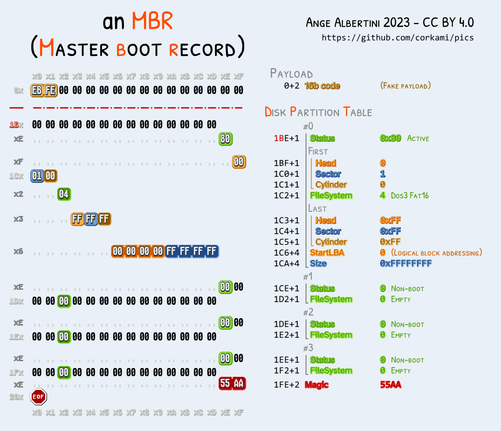Mbr+DPT - Master Boot Record with Disk Partitions Table (1983)
 Lnk - Shell link [Windows] (1995?)
Lnk - Shell link [Windows] (1995?)
 Cdix - ClangD Index [Riff] (2018)
Cdix - ClangD Index [Riff] (2018)
 Hex records - Intel[lec] Hexadecimal object (1973)
Hex records - Intel[lec] Hexadecimal object (1973)
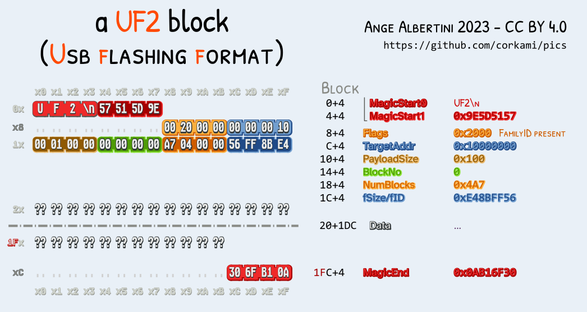 Uf2 - USB Flashing format (2016)


A polymock header: a file with many mock formats signatures. 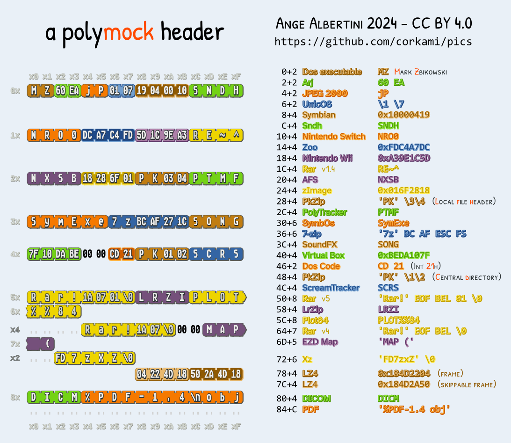
Universal Doom by Robert Xiao: functional DOS (Dos4/GW) and Portable Executable. 
A ZIP/PNG polyglot (sharing the deflate data) by Gynvael Coldwind. 
Dissection with more descriptions, and explanations (my initial style of binary posters).
source Inkscape SVGs and PoC with their sources are included


A layout of the various format's structures

Available in compact


or 'with descriptions' formats


Jneavat! N qnatrebhf pelcgbtencuvp bowrpg vf urnqvat lbhe jnl....


{kind=link}
{kind=link}
{kind=link}
{kind=link}
{kind=link}
{kind=link}
{kind=link}
{kind=link}
{kind=link}
{kind=link}
{kind=link}
{kind=link}
{kind=link}
{kind=link}
{kind=link}
{kind=link}
{kind=link}
{kind=link}
{kind=link}
{kind=link}
{kind=link}
{kind=link}